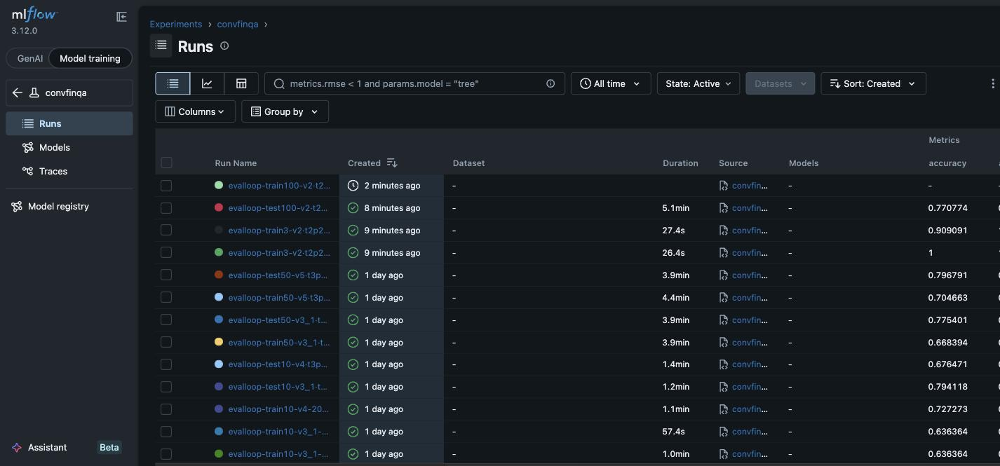
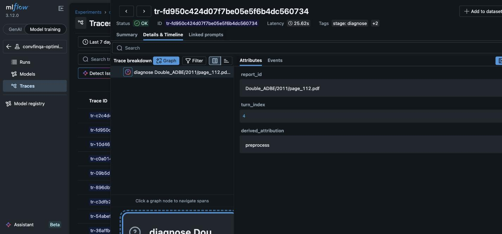
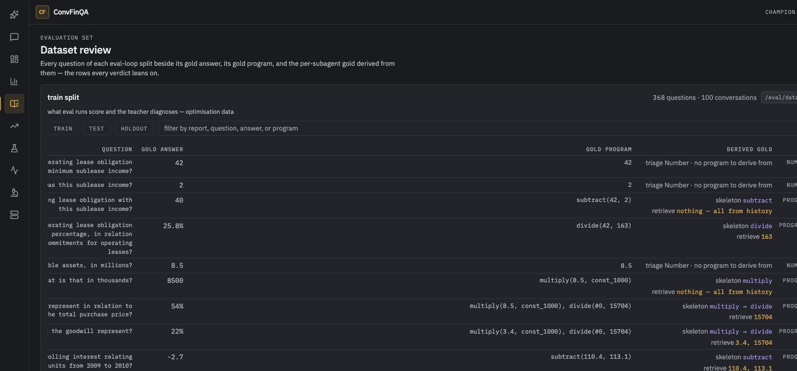
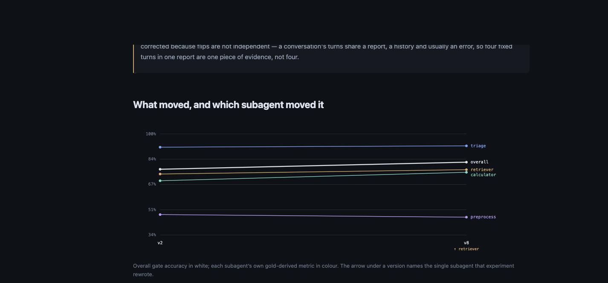
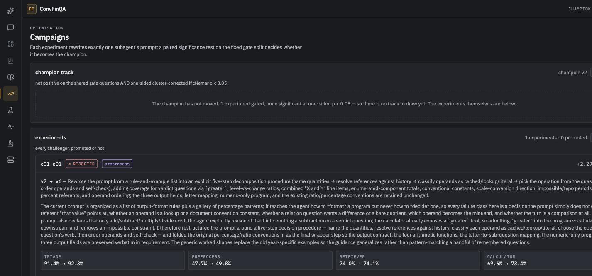
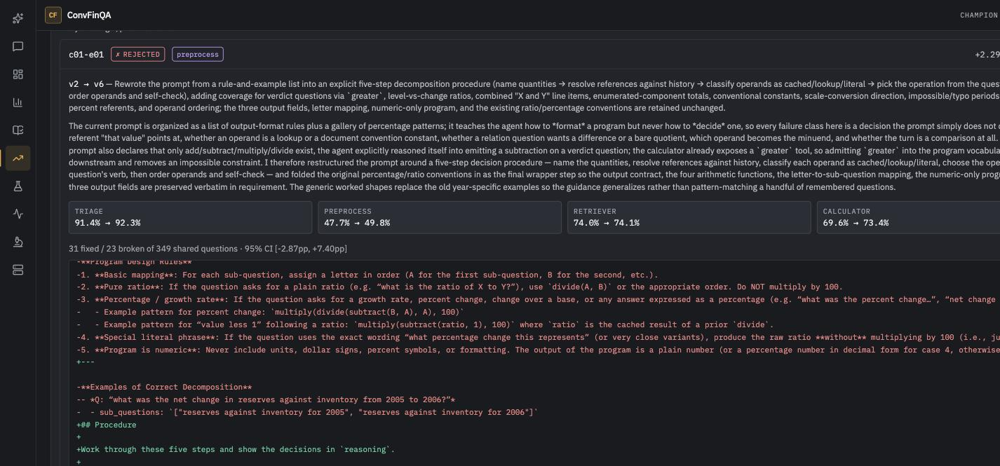
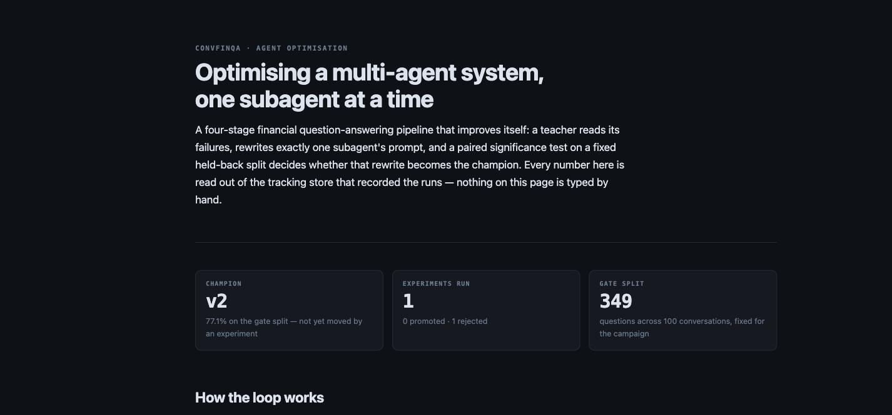
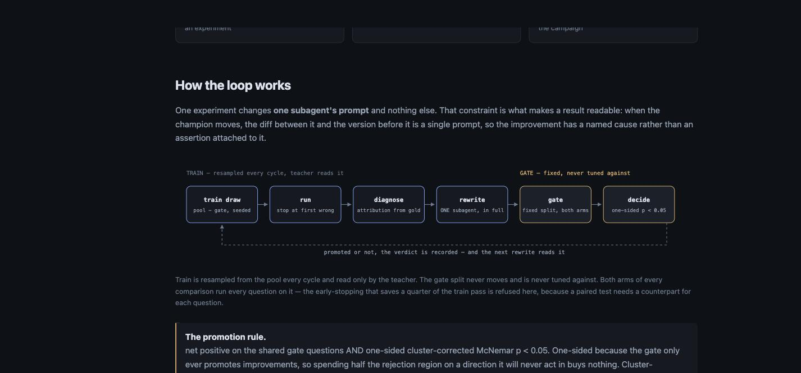

Results · s07 · 2026-09-04
Every work item in the s06 plan is implemented, tested and
running against live data. The loop then ran a real campaign:
three experiments, two rejections, and one promotion that moved the champion from v2 to
v8 at +4.58pp, one-sided clustered p = 0.040. The three versions promoted
under the old rule were re-judged and rolled back — the evidence for them was never
wrong, it was never sufficient.
v2 → v8, one subagent changed01 · the promotion rule
The old rule was net positive on the shared questions — more fixed than broken. It computed the McNemar p, printed it on every verdict, and never consulted it. The new rule is net positive AND one-sided cluster-corrected McNemar p < 0.05, and both halves of that correction earn their place:
A two-sided test splits its rejection region between "better" and "worse". The gate never acts on "worse" — it retains the champion either way — so half that region was being spent on an outcome with no consequence. One-sided at α = 0.05 detects exactly what two-sided at α = 0.10 detects, without doubling the false-positive rate in the direction that matters.
On the v5 evidence: two-sided p = 0.503, one-sided p = 0.252.
A conversation's turns share a report, a history and usually an error, so a change that fixes
one turn tends to fix its siblings. Treating 349 questions as 349 independent trials overstates the evidence.
Durkalski's correction sums the net discordance per conversation and normalises by the root sum of squares:
Z = Σdₖ / √Σdₖ². It reduces to ordinary McNemar when every cluster holds one question, and
shrinks toward zero as flips concentrate.
v5's 20 flips fell in 13 conversations: z = 0.816, clustered p = 0.207.
The strongest of them, v5, was promoted on Δ = +2.14pp with 12 questions fixed and 8 broken. Under
the new rule the same committed CSVs give a clustered one-sided p of 0.207 and a 95% cluster
bootstrap interval of [−3.2pp, +7.6pp] — an interval containing zero, with
P(Δ > 0) = 0.77. The champion is rolled back to v2, with the re-judgement
recorded on the registry history rather than quietly applied.
This is pinned by a test, so the rule cannot silently loosen again:
test_v5_promotion_is_refused_by_the_campaign_rule asserts the old rule passes it and the new one
does not.
The per-agent metric no longer offers a second route to promotion. Under the previous protocol a challenger could promote by moving its target subagent's own metric while overall accuracy merely failed to regress — which is how two of the three rolled-back versions got through. It is still computed and still reported on every verdict, because it answers a genuinely useful and different question: did the change do what it was supposed to do to the agent it targeted? A challenger that moves its agent's metric but fails the gate is a real finding about a sample too small to see it. It is not a promotion.
02 · attribution
Each experiment rewrites one subagent, so choosing which one is the single decision that determines
whether a cycle is useful. It was being made by asking an LLM. It is now computed: the gold program and gold
answer between them determine what three of the four stages should have produced, so
stage_scores.first_fault() walks the four checks in pipeline order and returns the first that fails.
| stage | what gold determines | the check |
|---|---|---|
triage | the turn's type | gold_turn_type is a column — direct comparison |
preprocess | the shape of the plan | op skeleton of the planned program vs the gold program's |
retriever | which values came from the document | gold operands minus constants minus earlier gold answers |
calculator | the answer, given retrieval succeeded | correctness conditioned on full operand recall |
That third row is the subtle one, and the Dataset page now shows it per question so a human can check the rule
rather than trust it. For divide(42, 163) where 42 was an earlier turn's gold answer, the retriever
owed only 163 — scoring it against both operands would blame it for a value it was never asked to
find.
Measured on the last full set of diagnoses before the change. The teacher over-called
preprocess (15 attributions against gold's 9 — five of them are really calculator faults) and
under-called triage (3 against 6). Since attribution picks the target and a campaign is capped at
five experiments, a disagreement rate near half means a meaningful share of experiments were optimising the
wrong agent. That was invisible while the loop was a demo.
The teacher is still asked — it is the better explainer, and its account of a failure is what the prompt
writer reads. It is now told the derived attribution and may dissent; a dissent is recorded as
attribution_disputed and counted as a run metric. A recurring dispute pattern is a bug in the
derivation rule, not noise, and this is how it becomes visible.
03 · the teacher and the prompt writer
Previously the writer merged proposals into "at most five crisp, imperative rules" that were appended to the existing prompt. Prompts could therefore only ever grow, and a prompt whose structure was the problem could never be fixed — the only available move was to add another rule to the bottom of it. It now receives the whole current prompt and returns a complete replacement, free to reorder, compress, delete or start over.
The pipeline parses each agent's output, so a rewrite that drops a required field breaks every turn rather
than only the failing ones. validate_prompt() refuses a rewrite that stops mentioning a token the
current prompt requires — turn_type and conv_type for triage,
sub_question for preprocess, the four DSL operations for the calculator — and refuses anything
under a 200-character floor, which is what a collapsed prompt looks like. A refused rewrite costs a proposal,
not a run.
The old memory fed back the last five runs' diagnoses. It never carried whether any of them worked, so
a rejected idea could be re-proposed, sharpened, and rejected again for as many cycles as a campaign lasted —
memory without feedback. ledger.py joins every kind=propose run to the
kind=gate verdict for the version it produced, keyed on that version, and hands the writer the
attempt history for the agent in front of it: what changed, and what happened.
Recording the verdict at all is new. Verdicts were previously printed to a terminal and nowhere else, which is
why the join had nothing to join to. log_gate_verdict() now writes each decision — promoted or not —
as an MLflow run with the comparison attached.
The four pipeline agents stay on deepseek-v4-flash: they run on every turn, they are what is being
optimised, and their cost has to stay measurable per question. The teacher and writer run a few dozen times per
cycle and their job is judgement, which is where the stronger model earns its keep — and on the SDK the writer
can read its own history out of MLflow through three read-only tools (search_attempts,
get_prompt, get_failures) rather than being handed a fixed excerpt of it. Tool calls
land in the message stream and are counted onto the run, so the extra reads are logged rather than invisible.
The plan said to scrub ANTHROPIC_API_KEY from the child environment. That is not sufficient, and
the failure it produces names nothing useful — a bare "Credit balance is too low" from an account with
an active subscription. Two things were wrong:
env over the parent process's, so a key that is merely
absent from the mapping comes straight back. It has to be set to the empty string.config.load_dotenv() loads all of ~/.env into os.environ at import
time — deliberately, because dspy reads DEEPSEEK_API_KEY from there — so the key is present in
the process whether or not anyone exported it.A third variant appeared while debugging: when the loop is driven from inside a Claude Code session, the child
inherits that session's CLAUDE_CODE_* identity and bills against it. All three are handled in
llm.subscription_env(), the one place the child environment is built, and pinned by a test that
plants a key in os.environ and asserts it comes out blank.
04 · splits and economics
eval_loop_v2 is cut as a strict superset of v1 — every report of v1's train stays in train, every
report of its test stays in test — so the runs already recorded against v1 remain evidence about the same
questions. Extending a split must not invalidate the history that preceded it, and the property is asserted in
code rather than assumed.
368 questions. Resampled every cycle
from pool − gate with a logged seed and the drawn ids as a run artifact. A fixed train split would
be overfitted within a few cycles; the seed is what keeps it reproducible anyway.
349 questions. Fixed for the campaign. Both arms of every comparison run every question on it. Early stopping and reseeding are refused here in code, not by convention.
Deliberately empty. During a campaign the holdout is the untouched remainder of the pool — around 3,000 conversations — from which a sealed split can be cut for one confirmatory run at the end.
Only the first wrong turn of a conversation carries signal; everything after it is cascade, and cascade is the teacher's noise. The first live cycle ran 401 questions down to 305 — a 24% saving against a modelled 24%. It is refused on the gate split, where the comparison is paired per question and a run that stops early leaves the turns it skipped with no counterpart.
The rows stop where the run stopped rather than being written as wrong: recording an unattempted turn as a failure would be a lie about a turn that never ran, and would quietly deflate every train accuracy the teacher reads.
05 · running it
The five steps used to be five commands typed in order with outputs copied between them, which worked exactly as
long as nobody mistyped a version or forgot to pass the gate CSV — and left no record tying the five runs
together. convfinqa-evalloop cycle chains them and stamps every run with the campaign, the
experiment label and the target agent, so an experiment is one query away afterwards.
pool − gate, stopping each at its first wrong answer. The seed and the drawn ids are logged.
Eval passes land in convfinqa; teacher work lands in convfinqa-optimization, so
optimisation traffic never interleaves with the accuracy history. Logging lives inside the runners rather than
beside them, so a pass cannot happen without being recorded.

evalloop-test100-v2 at 77.1% is the campaign's baseline on the new
349-question gate split; evalloop-train100-v2 is the cycle's train pass, running.

subtract(42, 2) derives to skeleton subtract and
nothing to retrieve — both operands were earlier turns' answers. The row below,
divide(42, 163), owes the retriever only 163. Scoring it against both operands would
blame it for a value it was never asked to find, and that is the kind of error this page exists to catch.06 · what shipped
stage_scores.first_fault() plus
attribute(), wired into diagnose for target selection; dissent recorded as
attribution_disputed and logged as a run metric.
Report-count allocation with parent extension, superset and
disjointness asserted in code; EVAL_MANIFEST selects the manifest for a session.
One-sided cluster-corrected McNemar at α = 0.05 as the promotion condition; both p values and the cluster z recorded on every verdict.
Cluster bootstrap on Δ;
draw_train(seed) from pool − gate; --stop-at-first-wrong, refused on the
gate.
Whole-prompt replacement with a rationale, validated against the agent's output contract and a length floor before the module is written.
Both agents on Claude Agent SDK / Opus 5 with read-only MLflow tools; the child environment built in one place, with the API key blanked.
ledger.py joining proposals to verdicts;
log_gate_verdict() making the verdict a run so there is something to join to.
The whole experiment in one command, with the five-experiment cap and the two-rejection rotation enforced.
GET /eval/campaigns and a page with the
champion track — overall accuracy plus a line per subagent, arrowed with the agent each experiment
rewrote.
Per-subagent expected values beside the gold program, so the attribution rule is checkable by a human.
evaluation/story.json and
docs/optimization/index.html, both generated from the tracking store and the registry.
GitHub Pages from docs/, plus a CI check that fails when
the committed page has drifted from the registry it claims to describe.
Both the Campaigns tab and the published write-up are built from evaluation/story.json. A page
that could disagree with the console about the same tracking store would be worse than having only one of them,
so there is one source and one command that rebuilds both.
| metric | v2 on 349 gate questions | what it means |
|---|---|---|
| overall accuracy | 77.1% | execution accuracy over every turn |
acc_triage_turn_type | 91.4% | number vs program, against gold |
acc_preprocess_skeleton | 47.7% | op skeleton vs gold's — deliberately strict, see below |
retriever_operand_recall | 74.0% | document operands the retriever actually surfaced |
acc_calculator_exec | 69.6% | program turns answered correctly |
calculator_acc_given_full_recall | 78.9% | …of those where retrieval succeeded — the honest calculator number |
The preprocess figure is the one to read carefully, and its own docstring says so: a program that is correct but shaped differently from gold reads as a miss. It is a useful relative signal between two versions on the same questions and a poor absolute one, which is exactly why the promotion rule does not depend on it.
07 · campaign c01, experiment 1
The first experiment of campaign c01 ran end to end on live data: a fresh 100-conversation train
draw, 49 diagnoses, a whole-prompt rewrite of preprocess, and both arms on the fixed 349-question
gate split. It produced exactly the situation the plan predicted and the old rule could not handle.
v2; the verdict is recorded and fed backNet positive by 8 questions, target metric moved in the right direction, overall accuracy up. Every condition the previous protocol asked for is met. What the new rule sees is that 54 flips spread over 38 conversations with an 8-question margin is not evidence — the interval runs from −2.87pp to +7.40pp, and roughly one run in five of a change this size would land here by chance alone.
Given full latitude, it did not add rules — it restructured. The preprocess prompt went from
5,418 to 13,530 characters, converting a list of output-format rules plus a gallery of
percentage patterns into an explicit five-step decision procedure. Its own reasoning, recorded on the propose
run and carried onto the promotion record:
"The current prompt is organized as a list of output-format rules plus a gallery of percentage patterns; it teaches the agent how to format a program but never how to decide one, so every failure class here is a decision the prompt simply does not cover — which referent 'that value' points at, whether an operand is a lookup or a document convention constant, whether a relation question wants a difference or a bare quotient, which operand becomes the minuend, and whether the turn is a comparison at all."
It also used its tools: eight calls, including get_prompt four times — it read the other three
subagents' prompts before rewriting the one it owned. That is the behaviour the ledger-plus-tools decision was
meant to buy, and it is visible in the run's own trace rather than inferred.
| subagent | v2 | v6 | read |
|---|---|---|---|
preprocess rewritten | 47.7% | 49.8% | the targeted agent, moved as intended |
calculator | 69.6% | 73.4% | unchanged prompt — it got a better plan to execute |
triage | 91.4% | 92.3% | unchanged prompt; within noise |
retriever | 74.0% | 74.1% | unchanged prompt; flat |
The calculator's number moved further than the agent that was actually rewritten, because the calculator executes whatever plan preprocess hands it. This is worth stating plainly on the story page: the attribution of a champion move to a single prompt is exact — the diff is one prompt — but the mechanism travels downstream, and reading the per-agent panel as four independent dials would be wrong.
Across the 49 diagnoses the teacher agreed with the derived attribution on 36 of them (73%), up
from 57% when it was attributing independently. The gain is mostly anchoring: it is now shown the
derived answer and asked to dissent only with evidence, so agreement is no longer an independent check. What
remains useful is the shape of the 13 disagreements — the teacher still over-calls retriever
(22 against gold's 15) and under-calls calculator (4 against 10), the same directional bias measured
before the change.
| attributed to | gold-derived | teacher | difference |
|---|---|---|---|
preprocess | 18 | 18 | 0 |
retriever | 15 | 22 | +7 |
calculator | 10 | 4 | −6 |
triage | 6 | 5 | −1 |
The target was preprocess either way this time, so the disagreement cost nothing on this cycle. It
would have cost a cycle on a run where retriever and calculator were close, which is precisely the case the
derivation now decides.
07b · campaign c01, experiment 2
This is the result I would keep if I could keep only one. Experiment 2 drew a fresh train split, diagnosed it,
and targeted preprocess again. Before writing, it received the ledger entry for experiment 1 — the
prompt, the diff, and the verdict. Its recorded rationale opens by quoting that verdict back:
"The previous restructure (v6) moved in the right direction
(+2.29pp, P(Δ>0)=0.79) but was rejected at p=0.19 with 23 questions broken against 31 fixed, so the fix is not
'more procedure' but less collateral damage: this rewrite keeps the procedural spine that trended
positive while deliberately dropping v6's speculative and contract-touching additions — the greater
operator (an output-contract change), the 'metrics joined by and' heuristic, adjustment-qualifier decomposition,
corrupted-period repair, and the percent-form re-derivation rule — and it restores v6's deleted concrete
examples."
It read the numbers, inferred that the binding constraint was questions broken rather than questions
fixed, and narrowed the change accordingly. It also identified on its own that v6's greater addition
was an output-contract change and reverted it. Then the gate measured whether it was right:
| experiment | target | Δ | fixed | broken | p | P(Δ>0) | verdict |
|---|---|---|---|---|---|---|---|
c01-e01 → v6 | preprocess | +2.29pp | 31 | 23 | 0.191 | 0.79 | rejected |
c01-e02 → v7 | preprocess | +2.58pp | 27 | 18 | 0.132 | 0.87 | rejected |
Broken fell from 23 to 18, which is what it set out to do. The delta rose, the p improved from 0.191 to 0.132, and P(Δ > 0) went from 0.79 to 0.87. It is still rejected — 0.132 is not 0.05 — but the loop moved in the direction the evidence pointed, because it was shown the evidence. That is the difference between memory and memory-with-feedback, and it is the one behaviour the previous design could not have produced.
v7's targeted metric acc_preprocess_skeleton went down, 0.477 → 0.451, while
overall accuracy went up 2.58pp. Under the M2 targeted rule that combination is incoherent:
the rule would have rejected the better challenger for failing on its target while the previous protocol's
net-positive path promoted it anyway. The metric is measuring "did the program have the same shape as gold",
and a genuinely better program with a different shape scores worse on it — exactly the looseness
stage_scores.py documents about itself. Reporting it as evidence is right. Gating on it was not.
Two consecutive rejections on preprocess, so campaign-status now reports
blocked_agents: ["preprocess"] and experiment 3 must pick a different subagent — even if
preprocess still carries the most derived faults, and even if it is named explicitly on the command line. This
is the cap doing the thing it exists for: without it the loop would spend all five experiments of the campaign
on the same agent, getting closer to 0.05 and never arriving.
07c · campaign c01, experiment 3
Experiment 3 targeted retriever. The writer restructured the prompt around lookup rather than
arithmetic: a hoisted output contract, an explicit four-step retrieval procedure, row disambiguation
(history-qualifier inheritance, stock vs flow, total vs component), period alignment with rollforward
reconciliation, one unified sign policy defaulting to unsigned magnitudes, and a precondition list that must be
satisfied before the agent is allowed to answer "not found".
v2 → v8 · t2p2r3c2Two rejections and one promotion, and the promotion is the one that cleared a bar the other two did not. The champion's gate accuracy moved 77.1% → 81.7%, attributable to a single subagent's prompt because that is the only thing that changed between the two bundles.
| experiment | target | Δ | fixed / broken | p | P(Δ>0) | verdict |
|---|---|---|---|---|---|---|
c01-e01 → v6 | preprocess | +2.29pp | 31 / 23 | 0.191 | 0.79 | rejected |
c01-e02 → v7 | preprocess | +2.58pp | 27 / 18 | 0.132 | 0.87 | rejected |
c01-e03 → v8 | retriever | +4.58pp | 34 / 18 | 0.040 | 0.96 | promoted |

v8 names retriever as the single
prompt that changed.Rewriting the retriever moved acc_preprocess_skeleton from 0.477 to 0.460 while overall
accuracy rose 4.58pp and acc_calculator_exec rose from 0.696 to 0.751. Two things follow. The
skeleton metric is a shape comparison, and a better answer can take a differently-shaped route to it, so it
moves against accuracy often enough that gating on it would be actively wrong — which experiment 2 showed from
the other direction. And the panel is not four independent dials: changing the values the retriever hands
downstream changes both what the calculator computes and what the plan ends up looking like.
The experiment record read "most derived first-faults (16); rotated past preprocess", and I was about
to write that the rotation cap caused this promotion. It did not — retriever had 16 derived faults against
preprocess's 14, so it would have been chosen anyway. The bug was in pick_target: the note
appended "rotated past X" whenever any agent was blocked, whether or not that agent actually
outranked the pick. It now claims credit only when the blocked agent really was in front, with a test pinning
both directions. The cap has not yet changed an outcome. It is still worth having — but the record should not
say otherwise, and a note that overstates its own cause is exactly the kind of thing a story page built from
that record would then repeat.
08 · the surfaces, with real data in them
Both read evaluation/story.json. The console is where you drive and inspect; the published page is
the same record written for someone who was not there. Neither can disagree with the other, and a CI check fails
the build when either has drifted from the registry.



convfinqa-evalloop story from the tracking store and the registry. The
headline is deliberately unflattering: one experiment, zero promoted, champion unmoved.
eval_loop_v1 — beside results measured on
eval_loop_v2. It now takes the manifest name from the gate runs themselves.Both are the same class of failure the CI staleness check exists for, which is a reasonable argument that the check was worth building.
09 · economics and what comes next
~32 minutes end to end at concurrency 10: 4 min train, ~22 min diagnosis, ~1 min rewrite, 5 min gate. Diagnosis dominates, and it is the part that scales with how many things are wrong.
~650 DeepSeek turns per experiment (305 train + 349 gate) at $0.0042/question — roughly $2.75. The baseline gate arm is reused across a campaign, so only the challenger's arm is paid for after the first.
50 Opus calls, ~11k output tokens on the rewrite alone. Reported beside the pipeline figure, never inside it: one is dollars per question, the other is subscription consumption, and summing them would make the economics read better than they are.
"Campaign c01: three experiments, one promotion. The champion moved from 77.1% to 81.7% on a fixed 349-question gate split, on a single subagent's prompt, at one-sided cluster-corrected p = 0.040. Two other candidates at +2.29pp and +2.58pp were rejected as not distinguishable from noise." Every clause there is checkable against the record, and the two rejections are load-bearing — they are what makes the promotion mean something rather than being the first thing that happened to be tried.
Note what the claim still is not: out-of-sample. Three challengers have now been measured against that split, so a portion of the +4.58pp is selection. The confirmatory run below is what converts it.
What would make it an out-of-sample claim is the confirmatory run: at the end of a campaign, cut a fresh 270-report holdout from the untouched reserve and run the first and final champions on it. One run, ~$4, and the whole thing stops being "improved on a split I optimised against".
The two preprocess candidates sat at +2.3pp and +2.6pp with P(Δ > 0) of 0.79 and 0.87 — they
look like a real improvement the split is too small to confirm. The gate is right to refuse each one; the
open question is what the campaign does next. The obvious move now that v8 is champion is to
re-target preprocess on top of it: the retriever fix changed what preprocess receives, so the
faults it was being blamed for may not survive the new baseline. Which is also the argument for the rotation
cap being about ordering rather than abandonment.
Re-running the same version
gives a different CSV (v3_1 on train10 scored 61.4 / 63.6 / 63.6%). One extra gate pass of v2
against itself would put a number on how much of any Δ is temperature, and at this split size that context is
not optional. ~$1.50.
Fifty sequential Opus calls at ~27s each. Batching them concurrently is the single biggest speed-up available and nothing about the loop requires them to be serial — they are independent by construction.
After 35 successful diagnoses, a single Agent SDK call returned no content at all and the exception took the
whole cycle with it — the train pass, the diagnoses, twenty minutes of work, discarded. The failure is
transient: the identical call succeeds on retry. Two changes, both mirroring a position the runner already
takes for conversations ("one bad conversation must not sink the pass"): run_structured
retries once with a backoff, and a case that still fails is counted, logged as
n_diagnose_failures, and skipped rather than raised. A pass where more cases failed than
succeeded still aborts — at that point it is not a flaky call, it is a broken teacher, and targeting off the
remainder would be picking from noise.
This is the sort of thing only running it finds. Nothing in the plan predicted it, and a loop meant to run unattended for five experiments cannot lose one to a dropped response.
Single_UPS/2015/page_35.pdf-3
failed with "the next request would exceed the request_limit of 50". One conversation in a hundred,
recorded as an error rather than silently scored as wrong — but a long conversation being unanswerable by
budget rather than by capability is a distinction the accuracy number currently does not make.
Sources: MLflow @ 127.0.0.1:5000 (convfinqa, convfinqa-optimization) ·
evaluation/story.json · evaluation/registry.json ·
evaluation/splits/eval_loop_v2.json ·
evaluation/predictions/evalloop/evalloop-{train,test}100-*.csv ·
commits fa4dd4f, fc94686.